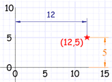
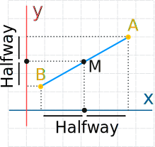
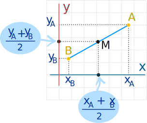
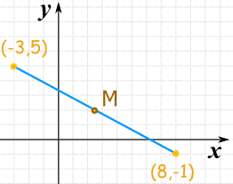

Midpoint of a Line Segment
Coordinate Point

Here the point (12,5) is
12 units along, and 5 units up
We can use Cartesian Coordinates to locate a point by how far along and how far up it is:
And when we know both end points of a line segment we can find the midpoint "M" (try dragging the blue circles):
Midpoint of a Line Segment

The midpoint is halfway between the two end points:
- Its x value is halfway between the two x values
- Its y value is halfway between the two y values
To calculate it:
- Add both "x" coordinates, divide by 2
- Add both "y" coordinates, divide by 2

As a formula:
M = ( xA+xB 2 , yA+yB 2 )
Example: What is the midpoint here?

Use the formula:
M = ( xA+xB 2 , yA+yB 2 )
M = ( (−3)+8 2 , 5+(−1) 2 )
M = ( 5/2, 4/2 )
M = ( 2.5, 2 )